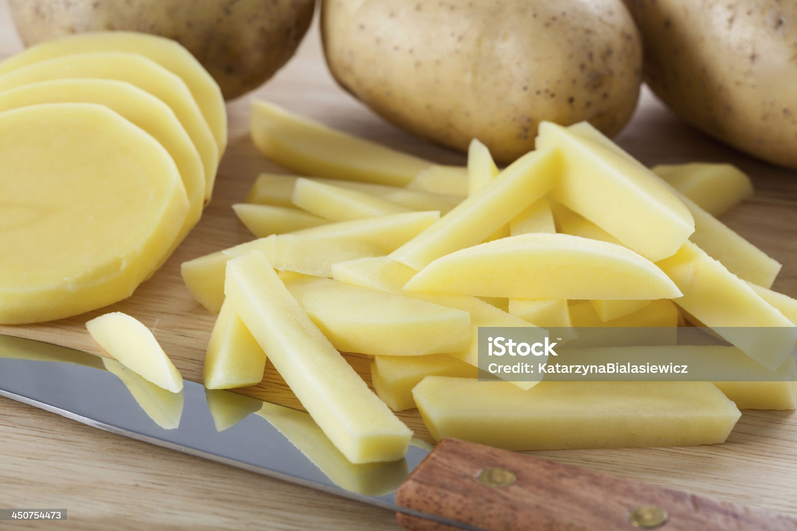
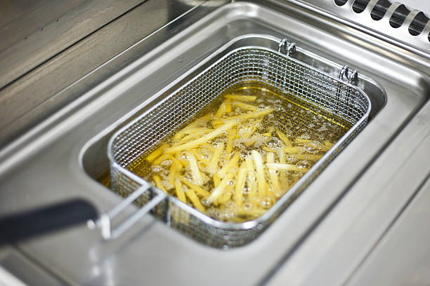
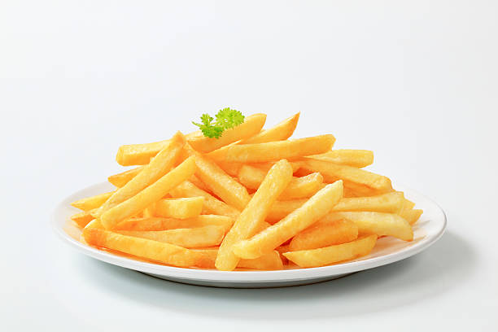

A continuación se muestra de forma sencilla los pasos a seguir para la elaboración de unas ricas patatas.
Pela las patatas, se cortan en bastones, se lavan bien y se introducen en un bol con agua fría durante unos 25 minutos. Hasta que suelten todo el almidón. Una vez finalizado este paso, escurre las patatas y pásalas por un papel de cocina para que se sequen del todo
Ponemos en la freidora a 180º durante 15 minutos. A los 15 minutos sacamos de la bandeja
Una vez escurridas las patatas las ponemos sobre un papel absorvente. Posteriormente las pasamos a un plato y listo para comer
